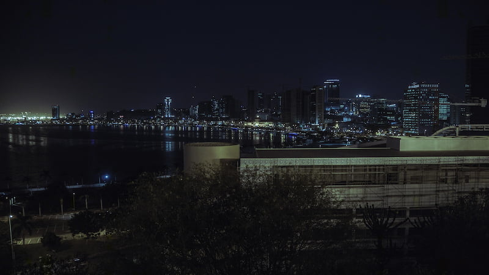

Luanda is a vibrant coastal city and the capital of Angola, famously known for the beautiful Bay of Luanda. One of the simplest pleasures there is walking along the Marginal, a long seaside promenade where people exercise and enjoy the breeze from the Atlantic Ocean.
